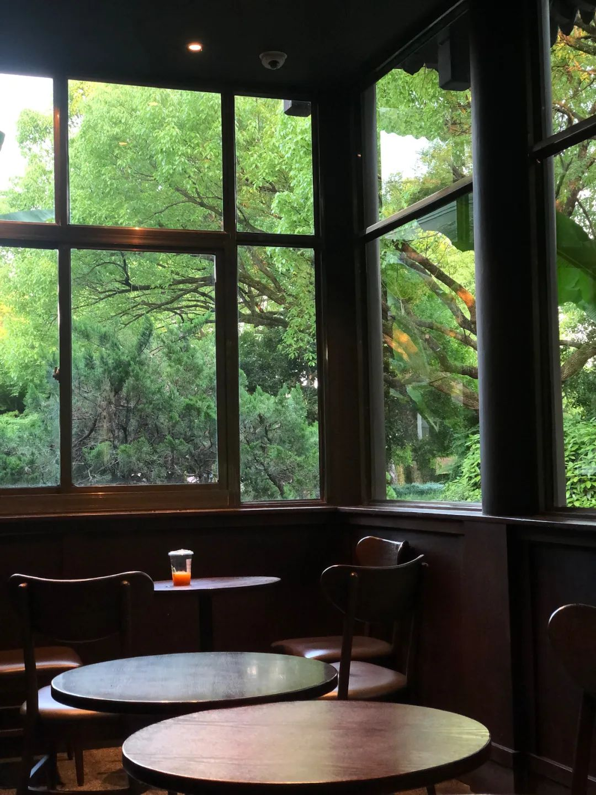

带着“我要去这里定居”的初心来到杭州。在进一步“打开自己”后，发现目前仍然无法安居某个固定的地方。这种状态倒也算不上是“野心”，也许只能算是一种“好奇心”，想看看自己还可以去到哪里。并不是一定一定追求跑出多远，而是趁着自己还有劲儿，继续走走看看。
带着“我还可以走得更远”的心情离开杭州。虽然不能确定下一个目的地能否顺利达到，但至少先在上海体验着吧。再次回到这个我出生、童年成长的地方，这个父母一辈始终游走在边缘的地方，心情有些许复杂，有一丝对童年的缅怀，一丝对自己的确信，也有一丝不再限制自己的畅快。
01 关于家和出走
以前只觉得自己没有“家”，后来才发现自己是“出走的娜拉”。
很小的时候，就意识到了一些女孩和男孩的不同。家里的房子很大，但是主卧A是爸妈的，主卧B是弟弟的。女孩是会出嫁的。女孩不争取的话家长通常也是不会支持女孩买房的。这些都让我认识到，我是没有自己的家的。那个已有的家是父母的，未来是弟弟的，不是我自己的。所以我换工作换城市，只需要看自己的心意就好，反正我也没有家。
后来，有了仅仅只属于自己的房子，但却没有停止迁徙。一直到现在，仍然没有停下的势头。于是我发现自己不是需要一个定居的家，不是一个“只属于自己的房间”，而是需要拥有一种自己可掌控的自由和那种自控带来的安全感。
从不得不出走，到去往自己想去的地方，并且塑造了自我迁徙的能力，我发现自己已经成为了较理想的自己，已经可以把这种自控的安全感随身携带了——这是在杭州的这两年多里我最大的成长。
02 关于惬意和卷都
杭州在我心中的AB面，有着很大的反差。
A面，是惬意。
回想在杭州的这两年，每次去西湖，除了堵车困扰之外，几乎没有糟糕的体验。离开杭州前的最后一个月，去了太子湾、花港观鱼、云栖竹径、乌龟潭。垂柳深潭、花香鸟鸣、千年古树，让人赞叹这个城市的自然。如果可以对物欲看轻点，规训束缚也宽松点，那么在这里还是可以拥有惬意松弛的生活的。

去益乐路门口有一棵大树的Afterglow，在混合着菜市场的社区氛围里，度过一个周末下午；抑或去有着绝美窗景的曲苑风荷星巴克，在满眼绿意中看一个下午的书；还有去单向空间听一场讲座然后读书到晚上再回家，都是一种极致松弛的独处体验，令人回味久矣。这些时刻，会让我觉得就在这里定居，也是不错的选择啊。
B面，是卷都。
身边的打工人对杭州的卷是一致认同，大厂都取消大小周后，这里仍然有很多小公司持续大小周，福利很少，加班很多。随着疫情后互联网滑坡，年终奖大缩水、岗位薪酬下调成为普遍现象。同样的岗位招聘，薪酬可以下调四分之一。这些对于杭州本地人和处境已稳妥的早期科技从业者的影响也许不大，但对外来务工群体来说，是生存性价比持续走低的“卷都”。
当然，在每个地方都有各自的“卷法”。很多时候，我们是被动的，缺少选择的。也许保持对变化和不确定性的敏锐，早应该成为一种习惯。
03 关于工作和朋友
从四年前选择要走 To B 方向开始，我就渐渐明确了一种状态，那就是为自己工作。在前司从市场部往产品部转的过程，也是我对于自己理解的理想产品营销人进行塑造的过程，当然到现在我可能也没有达到够理想的程度。
在一个岗位上是难以得到全方位的历练的，我们会受制于当前的公司阶段、团队资源、竞争格局、自己的能力储备等等。有些因素是通过自己的努力可以改变的，有些确实不能。对于自己能够改变的部分，我在尽可能尝试掌控。对于不能改变的部分，自己能够清晰认知到即可，这样可以避免自己过度内耗与较真，把所有问题都归咎于自身。
在杭州的最后半年，尤其是22年12月底结束在职考研状态之后，我尝试做出的转变是：对自己不那么苛刻。每当我在休息日，下意识地觉得自己在浪费时间的时候，我尽量告诉自己：休息是必要的，放松也是必要的，你不可能一直那么紧绷或自律。
也正是在这个过程中，我与更多工作认真负责但也关注生活的同事走得更近。
比如市场团队和产品团队的姐妹兄弟。我发现这些人有一个共同的特征：虽然嘴上叫嚷着好卷好累，但工作的时候都非常认真靠谱，我们反感的是无效内卷、问题流程或付出与收获不对等，而不是职业。工作之外的时间，我们也能够约饭、约 live 或约散步，一起看树看湖。我想，在数字世界里，建立一些物理上的亲密感，是可贵的。在杭州除了自身的成长以外，最大的收获就是这些朋友了吧。
我很感恩，在每一个公司、每一个居住过的城市，都能留下一些可以私下保持长期联系的朋友。
结语
2023年5月，搬到上海，迎接新机会、MBA入学和即将进入30岁的自己。做好新阶段的准备，许愿顺遂。